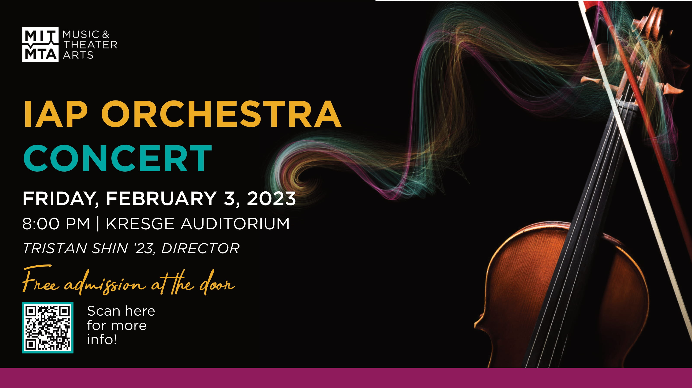

Hi! I'm Tristan Shin. I'm currently an undergraduate at MIT, studying music (course 21M) and math (course 18) with a minor in computer science (course 6). I expect to graduate in June 2023.
More info will eventually be put here.
To see more about what I work on, check out the tabs in the header.
I am conducting the MIT IAP Orchestra on Friday, February 3, 2023 at 8pm, at Kresge Auditorium. There is also a livestream at https://web.mit.edu/webcast/mta/iap23/1/. 